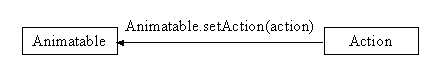
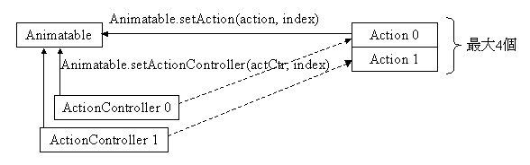
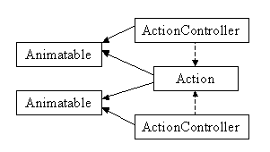

com.docomostar.opt.ui.eruption.Object3D
com.docomostar.opt.ui.eruption.ActionController
com.docomostar.opt.ui.eruption.Object3D
com.docomostar.opt.ui.eruption.ActionController
|
|||||||||
| 前のクラス 次のクラス | フレームあり フレームなし | ||||||||
| 概要: 入れ子 | フィールド | コンストラクタ | メソッド | 詳細: フィールド | コンストラクタ | メソッド | ||||||||
Object
public final class ActionController
Action オブジェクトに対して細かい制御を行うクラスです。
制御対象となる Action は ActionController オブジェクト生成時に指定します。ActionController を使うことでリピートモード、セグメント単位での重み、およびセグメント単位での Action フレーム値を制御することができます。
ActionController 自体は Animatable に関連付けられ、オブジェクトに対するアニメーションの制御を行います。ただし、実際に ActionController による Action の制御を有効化するためには、
あらかじめ Animatable.setUseActionControllerNum(int) により有効化する ActionController の最大インデックスを設定しておく必要があります。
1 つの Animatable に対して最大 4 つまで ActionController を関連付けることが可能で、1 つ以上の ActionController が有効化されているときにはアクションの概念の項に記述されている式に基づきモーションブレンドが行われます。
端末によって、本クラスはサポートされていない場合があります。未サポートの場合、メソッドが呼び出された時点で UnsupportedOperationException が発生します。
ActionController の概念
(1) ActionController を使用しない場合

Animatable.setFrame(float) により、Action のすべてのセグメントに同じフレーム値を設定します。
(2) ActionController を使用する場合

ActionController を使うことにより、以下の操作が可能になります。
Action のセグメントのフレーム値を個別に設定。
ActionController に重みを設定(セグメント全体、セグメント個)することにより、複数の Action をブレンド。ブレンドされたアニメーション = Action 0 * 重み 0 + Action 1 * 重み 1 〜 Action N * 重み N (Nは1〜3)
ActionController を Action と分けているのは、下図のように 1 つの Action を複数の Animatable で使い、別の ActionController を使うことを可能にするためです。

| フィールドの概要 |
|---|
| コンストラクタの概要 | |
|---|---|
ActionController(Action act)
ActionController を生成します。 |
|
| メソッドの概要 | |
|---|---|
void |
enableFrame(boolean enable)
Animatable.setFrame(float) でセットしたフレーム値に代わって ActionController のフレーム値を使用するか否かを設定します。 |
int |
getRepeatMode()
Action の再生モードを取得します。 |
void |
resetWeight()
Action の全セグメントに対してモーションブレンドの重みをリセット(1.0 に設定)します。 |
void |
setFrame(int segIndex,
float frame)
セグメントを指定して Action にフレーム値を設定します。 |
void |
setFrameAll(float frame)
Action の全セグメントに対して同じフレーム値を設定します。 |
void |
setRepeatMode(int mode)
Action の再生モードを設定します。 |
void |
setWeight(int segIndex,
float weight)
セグメントを指定して Action にモーションブレンドの重みを設定します。 |
void |
setWeightAll(float weight)
Action の全セグメントに対して同一のモーションブレンドの重みを設定します。 |
| クラス com.docomostar.opt.ui.eruption.Object3D から継承されたメソッド |
|---|
dispose, equals, findObject3D, findObject3D, getClassType, getUserId, hashCode, isDisposed, isRenderEnable, setRenderEnable, setUserId |
| クラス Object から継承されたメソッド |
|---|
getClass, notify, notifyAll, toString, wait, wait, wait |
| コンストラクタの詳細 |
|---|
public ActionController(Action act)
ActionController を生成します。
初期値は以下の通りです。
Action.MCE_REPEAT_MODE_CONSTANT
ActionControllerのフレーム値の使用可否 - true
act - Action を指定します。
NullPointerException -
act が null の場合に発生します。| メソッドの詳細 |
|---|
public final void setWeight(int segIndex,
float weight)
セグメントを指定して Action にモーションブレンドの重みを設定します。
segIndex - セグメントのインデックスを指定します。Actionの概念を参照してください。weight - 重みを指定します。
IllegalArgumentException -
segIndex が [0, セグメント数 - 1] 以外の場合に発生します。
IllegalArgumentException -
weight < 0 の場合に発生します。public final void setWeightAll(float weight)
Action の全セグメントに対して同一のモーションブレンドの重みを設定します。
weight - 重みを指定します。
IllegalArgumentException -
weight < 0 の場合に発生します。public final void resetWeight()
Action の全セグメントに対してモーションブレンドの重みをリセット(1.0 に設定)します。
public final void setFrame(int segIndex,
float frame)
Action にフレーム値を設定します。
segIndex - セグメントのインデックスを指定します。Actionの概念を参照してください。frame - フレーム値を指定します。
フレーム値の設定のみ行います。実際の再生処理は Animatable.updatePosture() が呼び出されたときに行われます。
このメソッドで設定したフレーム値を用いるには enableFrame(boolean) で ActionController のフレーム値を使用するようにしておく必要があります。
IllegalArgumentException -
segIndex が [0, セグメント数 - 1] 以外の場合に発生します。public final void setFrameAll(float frame)
Action の全セグメントに対して同じフレーム値を設定します。
frame - フレーム値を指定します。
フレーム値の設定のみ行います。実際の再生処理は Animatable.updatePosture() が呼び出されたときに行われます。
このメソッドで設定したフレーム値を用いるには enableFrame(boolean) で ActionController のフレーム値を使用するようにしておく必要があります。
public final void enableFrame(boolean enable)
Animatable.setFrame(float) でセットしたフレーム値に代わって ActionController のフレーム値を使用するか否かを設定します。
初期値は、true です。
enable - フレーム値の使用可否を指定します。指定できる値は以下の通りです。
true
false
public final void setRepeatMode(int mode)
Action の再生モードを設定します。
mode - 再生モードを指定します。指定できる値は以下の通りです。
Action.MCE_REPEAT_MODE_CONSTANT
Action.MCE_REPEAT_MODE_LOOP
IllegalArgumentException -
mode が不正な場合に発生します。public final int getRepeatMode()
Action の再生モードを取得します。
Action の再生モードを返します。
|
|||||||||
| 前のクラス 次のクラス | フレームあり フレームなし | ||||||||
| 概要: 入れ子 | フィールド | コンストラクタ | メソッド | 詳細: フィールド | コンストラクタ | メソッド | ||||||||
NTT DOCOMO,INC.
本製品または文書は著作権法により保護されており、その使用、複製、再頒布および逆コンパイルを制限するライセンスのもとにおいて頒布されます。NTTドコモ（その他に許諾者がある場合は当該許諾者も含めて）の書面による事前の許可なく、本製品および関連する文書のいかなる部分も、いかなる方法によっても複製することが禁じられます。フォントを含む第三者のソフトウェアは、著作権法により保護されており、その提供者からライセンスを受けているものです。
Sun、Sun Microsystems、Java、J2MEおよびJ2SEは、米国およびその他の国における米国 Sun Microsystems,Inc.の商標または登録商標です。サンのロゴマークは、米国 Sun Microsystems, Inc.の登録商標です。
FeliCaは、ソニー株式会社が開発した非接触ICカードの技術方式です。FeliCaは、ソニー株式会社の登録商標です。
「ｉモード」、「ｉアプリ／アイアプリ」、「ｉ-αppli」ロゴ、「DoJa」はNTTドコモの商標または登録商標です。
その他記載された会社名、製品名などは該当する各社の商標または登録商標です。